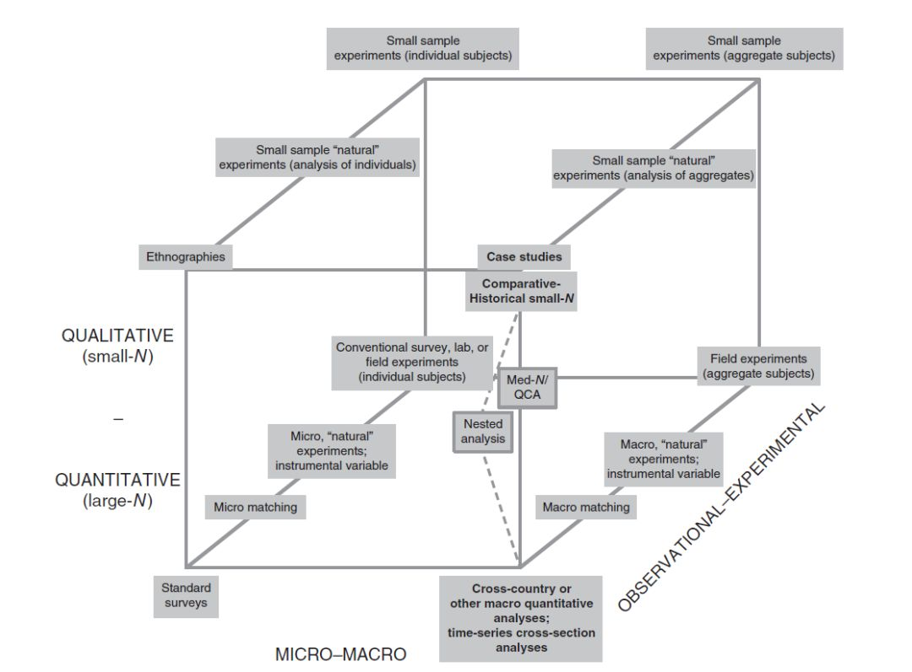
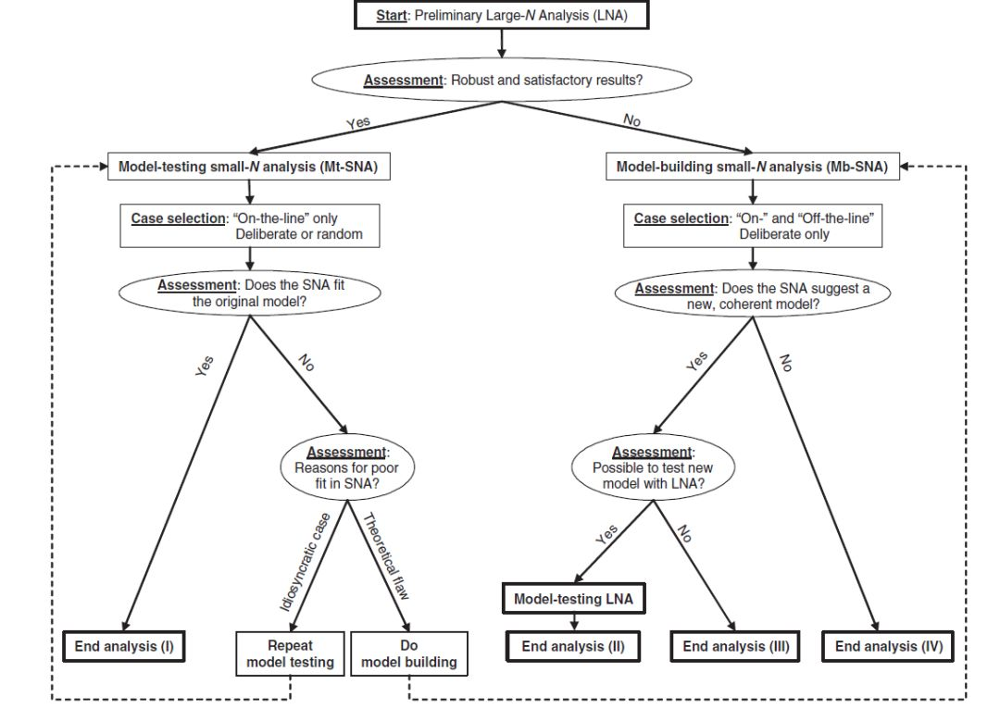

收录于合集
文献来源： Lieberman, E. S. 2015. “Nested Analysis: Toward the Integration of Comparative-historical Analysis with Other Social Science Methods.” In James Mahoney & Kathleen Thelen (eds), Advances in Comparative-Historical Analysis (Cambridge: Cambridge University Press) 240-63.
作者简介： Evan Lieberman，麻省理工学院政治学系教授，研究方向主要包括族群/身份政治、公共政策、研究方法、国家建构、当代非洲等。
编者按： 在过去的一年中，政文观止Poliview“方法论衡”板块陆续为大家介绍了统计、比较、实验等基础范式和许多不同的前沿和多元研究方法。在这一过程中，不断有读者朋友来信询问： 社会科学到底有多少种研究方法？不同的方法之间究竟是互斥还是互补？什么样的研究设计才能在最大程度汲取不同方法的养分？ 本期，小编就为大家选编一篇影响深远而又争议极大的文献，相信各位读者都能找到自己想要的答案。
一、科学方法的三个维度
当代社会科学研究中被广泛采用而又普遍认可的方法不下十余种，许多方法都会积极地宣称和捍卫自己的独特性和优越性。那么，有没有一种类型学体系能够将所有的主流方法囊括其中，并且能明确他们的相互关系和相对位置呢？本文在前人的基础上做出了进一步的努力。作者认为，社会科学研究方法可以从三个维度进行界定和区分：1.分析的层次或单元（宏观- 微观）；2.样本数量与分析模式（小样本/定性-大样本/定量）；3.变量差异的来源（观察-实验）。
在这一体系中，最为典型的研究方法可以被归为8类（222），分别位于下图立方体的顶点。其中，定量研究者最为熟悉的方法位于正方体的正面左下角。这中方法范式通过抽样调查的方式直接获取大量个体的数据，在不涉及实验干预处理的情况下通过统计学方法完成假设检验和因果推断。定性研究者最为熟悉的方法则位于正方体的正面右上角，也即在宏观（国家或集体）层面通过对单一案例的深描或少数案例的比较，在因果性叙述中获得一定的普遍性规律。显然，这些案例的情况基本上都是研究者事后采集的，无法进行事前的干预和处理。依次类推，较为传统的民族志方法则位于正面左上角；而宏观层面的跨国统计分析则位于正面右下角。
遗憾的是，正方体正面上的所有方法虽然为人熟知，但都无法像自然科学一样获得高度精确的因果推断。原因在于，所有在事后观察得来的数据都没有经过充分而规范的干预，因此传统定量研究者大谈特谈的“控制变量”只能是一种理论上的近似，而传统定性研究者津津乐道的“同质性”、“异质性”也停留在理想型的范畴内。在这种情况下，位于正方体背面的各种实验方法开始蓬勃发展（James N. Druckman | 政治学实验：历史、种类与意义）。当然，社会科学研究的复杂和困难往往超过了实验方法的极限，因此也有不少学者转而寄希望于更为折衷的“自然实验”和“匹配”。

二、混合方法的可能性
自《社会科学中的研究设计》（即江湖中流传的“KKV”）问世以来，社会科学中的定性与定量之争已经持续了二十多年。在这一过程中，定量阵营的方法迭代日新月异，技术门槛越来越高；而定性阵营则在经典统计学、贝叶斯学派、大数据方法的轮番轰炸下陷入了持续的尴尬境地。一部分定性学者坚持传统，拒绝与定量阵营对话，甚至不承认社会科学的科学性。另一部分学者则渴望打破方法论的壁垒，尝试发展出定量与定性都能够接受和使用的范式与技术（譬如查尔斯·拉金发明的QCA）。
时至今日，更多的学者开始尝试绕过方法论范式上的核心争议，直接运用两种或更多的方法（主要是案例/比较和统计）来开展研究。这样的尝试一般被称为混合方法，但学界对其究竟是否科学目前还没有定论。作者认为，研究者在实行混合方法之前必须明确两个前提。首先，研究者必须承认，社会科学的研究永远都是从较少对象中来获取更多对象中的普遍知识，而研究者也永远无法深入研究所有的目标对象。如果研究者不承认这一点，那么混合研究就完全没有必要。其次，如果承认统计的科学性，那么社会科学中的因果关系大多是概率性的而不是决定性的，所谓“原因”不过是提高“结果”出现可能性的一种实体。因此，如果研究者要严格地追寻充分条件和必要条件，混合研究对其就没什么特别的意义。
三、嵌套分析应用指南
如果同时采用定量和定性的分析技术，同时研究对象又集中在宏观层面，那么这种研究方法就被称为嵌套分析（nested analysis）。对此，作者给出了一套分析流程供研究者参考。
作者认为，嵌套分析的起点就是人们熟知的大样本统计分析。研究者应当根据既有文献和自己的观察思考建立起一系列假设（尤其是竞争性假设），再通过收集数据来检验这些假设。随后，研究者需要对定量分析的结果进行评估。参数的统计结果是否符合预期？模型的拟合程度是否足够好?竞争性假设有没有表现出差异明显的解释？尤其值得注意的是，研究者必须思考，定量模型中未被解释的变异部分究竟是来自随机误差，还是更为重要却未被考虑的新变量？不同于微观层面的研究，嵌套分析的定量部分可以很明确地告诉研究者哪些案例（国家或地区）明显地偏离了预测值，这将为作者的进一步研究提供重要的启发。
如果研究者根据既有的证据和自身的经验判断定量模型足够稳健，那么下一步的工作就是在符合模型的样本中挑选典型案例（或者随机选择）。研究者需要对这些案例进行更为深入的研究，最大可能地揭示其中的因果机制和重要的事实细节。如果案例的情况很好地贴合了定量模型和理论预期，那么嵌套分析就可以宣告成功了。否则，研究者需要再次做出评估，判断这种矛盾来自所选案例的特殊性还是理论和模型的缺陷。如果是前者，研究者需要重新开始小样本研究；如果是后者，研究者则必须从头开始新的假设检验。
如果很不幸（但又很常见），研究者提出的定量模型并不稳健，特别是无法解释自己最心仪或公认最重要的案例。那么研究者也可以继续嵌套分析。作者应当同时选取定量模型能够解释和不能解释的案例，深入研究正反两方面的证据，从而判断能否提出更为合理的理论和模型。在最理想的情况下，研究者应当带着新的发现回到定量分析从头开始，循环往复直到满意为止。

注：为了方便读者浏览和理解，小编对原文进行了较大的删节和改写，需要引用文献或深入学习的读者请仔细阅读原文。特此感谢“政文观止Poliview”和“历史制度主义研究”公众号联合主办的“比较历史分析”读书会，特此感谢第十一届政治学与国际关系共同体会议“争议中的定性比较分析（QCA）：成果与反思”板块。
编译：陆屹洲
审读：杨端程
编辑：吴温泉


“广告点一点，也是支持学术公益 ”
”
政文观止
微信扫一扫赞赏作者 __赞赏
已喜欢，对作者说句悄悄话
取消 __
发送给作者
发送
最多40字，当前共字
上一页 1/3 下一页
长按二维码向我转账
受苹果公司新规定影响，微信 iOS 版的赞赏功能被关闭，可通过二维码转账支持公众号。